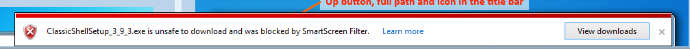

FYI, a quality AV scanner deems it healthy...

-Noel
| Classic Shell http://www.classicshell.net/forum/ |
|
| ClassicShellSetup_3_9_3.exe is unsafe to download... http://www.classicshell.net/forum/viewtopic.php?f=19&t=1170 |
Page 1 of 1 |
| Author: | NoelC [ Sun Aug 25, 2013 8:34 pm ] |
| Post subject: | ClassicShellSetup_3_9_3.exe is unsafe to download... |
The whole message IE10 in Windows 8 emits is this:  I guess you must have upset someone at Microsoft. Personally this kind of thing irritates me greatly, because not being deemed "safe" by mother Microsoft isn't quite the same thing as being deemed "unsafe", now is it? They're just arbitrarily getting in the way of people's work, no doubt to push people away from downloading that awful wild non-App Store software. Of course the answer is to ditch SmartScreen. This came up on a test VM that I haven't done that with. -Noel |
|
| Author: | Jcee [ Sun Aug 25, 2013 8:38 pm ] |
| Post subject: | Re: ClassicShellSetup_3_9_3.exe is unsafe to download... |
Not safe, basically means its a new file... and hasn't been confirmed to be safe.. |
|
| Author: | Gaurav [ Sun Aug 25, 2013 8:42 pm ] |
| Post subject: | Re: ClassicShellSetup_3_9_3.exe is unsafe to download... |
Strange that SmartScreen would complain because now the installer is signed. The money spent on signing it is a waste if such a warning still comes up. |
|
| Author: | Ivo [ Sun Aug 25, 2013 9:02 pm ] |
| Post subject: | Re: ClassicShellSetup_3_9_3.exe is unsafe to download... |
It works for me from the main page. Earlier this morning I had this pop up for the zip file containing the debug info. We'll see how this develops in the next few days. I guess SmartScreen is not that bright. |
|
| Author: | NoelC [ Sun Aug 25, 2013 9:15 pm ] |
| Post subject: | Re: ClassicShellSetup_3_9_3.exe is unsafe to download... |
Jcee wrote: Not safe, basically means its a new file... and hasn't been confirmed to be safe.. You and I know that, but what I'm pointing out is that being deemed "unsafe" isn't the same as "not yet confirmed to be safe". There are subtleties of the language at play here, and Microsoft is stepping over the line. Someone needs to sue them for restraint of trade. How are you supposed to gain a good reputation if no one can download the new release in the first place? What about the poor user who sees the product for the first time and gets told this by Microsoft when he tries to download it? He may never try again, always remembering that this product is "unsafe". -Noel |
|
| Author: | Ivo [ Sun Aug 25, 2013 9:22 pm ] |
| Post subject: | Re: ClassicShellSetup_3_9_3.exe is unsafe to download... |
Are you able to bypass it and download the file? In the past I've seen the SmartScreen pop up with a warning but there was always a way to disregard the warning and continue (without completely disabling the SmartScreen). If it doesn't let you continue, then may be it indeed considers the file to be unsafe. |
|
| Author: | NoelC [ Sun Aug 25, 2013 9:26 pm ] |
| Post subject: | Re: ClassicShellSetup_3_9_3.exe is unsafe to download... |
ONLY if I go into Internet Explorer's Advanced configuration settings and disable the SmartScreen Filter setting. There is not any way I can find otherwise. This is a subtle but significant change, as - like you - I have been able to go through a More Info link or something and choose to bypass the restrictions in the past. Like I said at the start, you must have upset someone at Microsoft. Or they have chosen to make their system more aggressive at blocking non-App Store software. Either way, it's a bad omen. -Noel |
|
| Author: | Gaurav [ Sun Aug 25, 2013 9:26 pm ] |
| Post subject: | Re: ClassicShellSetup_3_9_3.exe is unsafe to download... |
I am getting this too. Upon clicking "View Downloads", and then right clicking the file, there is a "Download unsafe file" option hidden in the right click menu. As soon as the download completes, the file is deleted! I have Windows SmartScreen turned off (the one in Windows 8) but IE SmartScreen is on. I also have Windows Defender turned off and no other anti-virus installed. Other browsers letting me download it just fine. VirusTotal.com also shows it clean. IE's OverSmartScreen is acting up again. |
|
| Author: | NoelC [ Sun Aug 25, 2013 9:34 pm ] |
| Post subject: | Re: ClassicShellSetup_3_9_3.exe is unsafe to download... |
FYI, a quality AV scanner deems it healthy... -Noel |
|
| Author: | Gaurav [ Thu Aug 29, 2013 12:23 am ] |
| Post subject: | Re: ClassicShellSetup_3_9_3.exe is unsafe to download... |
So this issue seems to have resolved itself automagically. I am sure SmartScreen didn't stop flagging it as malware because the EXE developed the app reputation that SmartScreen needs. Internals build links which couldn't have been downloaded by anyone else and which were also getting flagged as dangerous are also now allowed. |
|
| Author: | Dch48 [ Thu Aug 29, 2013 12:35 am ] |
| Post subject: | Re: ClassicShellSetup_3_9_3.exe is unsafe to download... |
GauravK wrote: So this issue seems to have resolved itself automagically. I am sure SmartScreen didn't stop flagging it as malware because the EXE developed the app reputation that SmartScreen needs. Internals build links which couldn't have been downloaded by anyone else and which were also getting flagged as dangerous are also now allowed. I think that's the exact reason it stopped being flagged. Either that or Microsoft decided to whitelist it and other offerings.
|
|
| Author: | NoelC [ Tue Sep 17, 2013 8:32 am ] |
| Post subject: | Re: ClassicShellSetup_3_9_3.exe is unsafe to download... |
I wonder if Microsoft may test the waters from time to time to see if they can up the resistance of Windows to load software not delivered by them through their App Store. Perhaps they listen for screams, and thus get an idea of how painful it will be for them when they ultimately close the door permanently to 3rd party software. People whose 3rd party software is flagged - even briefly - ought to hire lawyers to threaten Microsoft, who will of course hear that "scream" and have to spend a little money to respond. This trend is not good! -Noel |
|
| Author: | Ivo [ Tue Sep 17, 2013 8:41 am ] |
| Post subject: | Re: ClassicShellSetup_3_9_3.exe is unsafe to download... |
It is not just Microsoft. Somebody complained just yesterday that Norton was also bitching about the latest download with the "WS.Reputation.1" error. The reputation-based heuristic that many AV programs are using is rubbish. "Oh, I have not seen this file before, must be bad, because I know about all good files". That's quite presumptuous. They are turning into gatekeepers and I don't like where this is going. |
|
| Author: | NoelC [ Tue Sep 17, 2013 9:25 am ] |
| Post subject: | Re: ClassicShellSetup_3_9_3.exe is unsafe to download... |
It's refreshing to converse with others who really "get it". Thank you, Ivo. -Noel |
|
| Author: | Gaurav [ Mon Dec 23, 2013 4:31 am ] |
| Post subject: | Re: ClassicShellSetup_3_9_3.exe is unsafe to download... |
It is safe. It is just another one of those false positives due to the compression the installer uses. |
|
| Page 1 of 1 | All times are UTC - 8 hours [ DST ] |
| Powered by phpBB® Forum Software © phpBB Group https://www.phpbb.com/ |
|